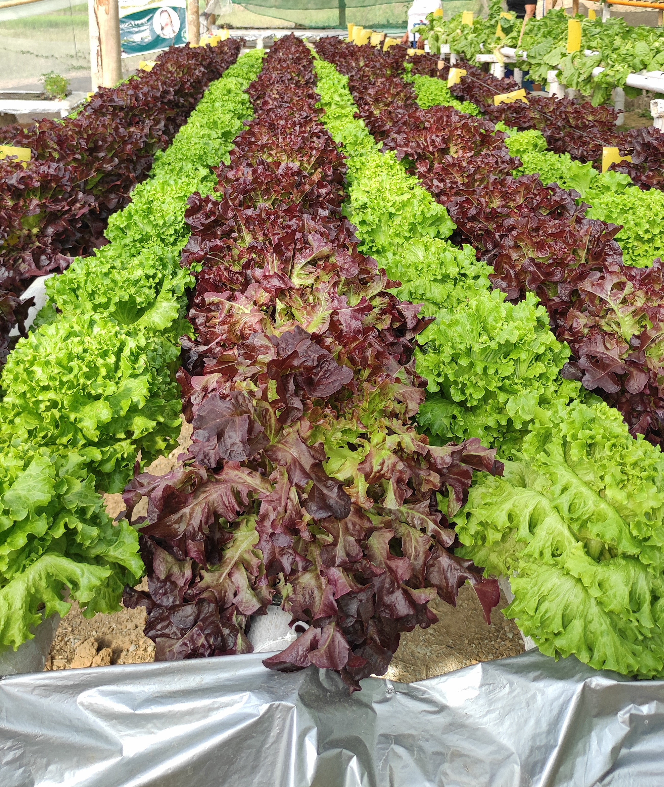

Carolotan Hydroponics showcases a modern and sustainable approach to farming in Dupax del Sur. Using soilless cultivation techniques, fresh vegetables and herbs are grown in nutrient-rich water systems, ensuring high-quality produce that is both healthy and environmentally friendly. The site not only promotes food security and innovation in agriculture but also serves as an eco-tourism destination where visitors can learn about hydroponic farming, witness the process firsthand, and appreciate how technology and nature work together to support sustainable living.